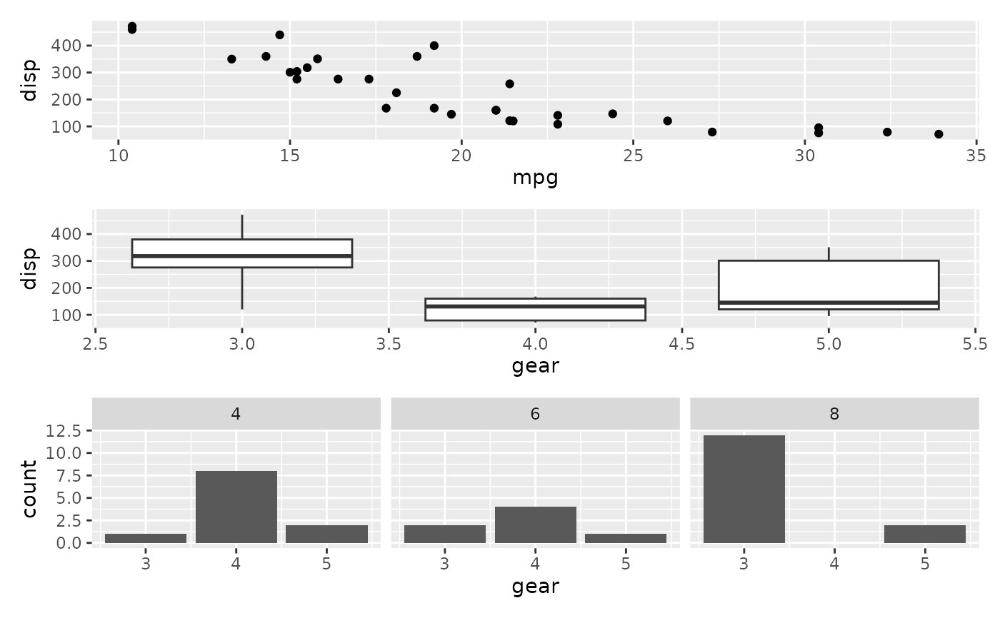
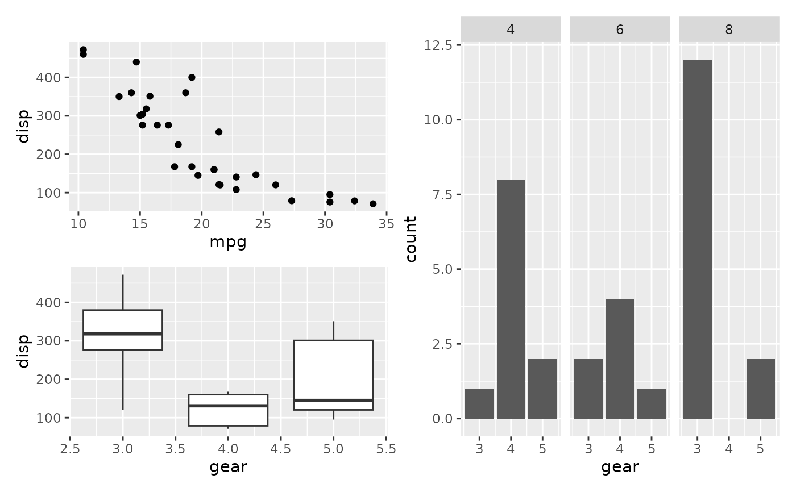

The various operators work by adding new elements to the current patchwork.
When a patchwork is added to something it will be nested inside the new
composition, but this is only for patchworks that lies on the right hand side
of the operator. If you want to nest the left hand side of the operator you
have to do it explicitly in order to circumvent patchworks normal "add-to"
behaviour. This is what the nest() function allows. As such it serves the
same purpose as the - operator, but does so in a much more
explicity way while also allowing it to be used with e.g. | and /.
Examples
library(ggplot2)
p1 <- ggplot(mtcars) + geom_point(aes(mpg, disp))
p2 <- ggplot(mtcars) + geom_boxplot(aes(gear, disp, group = gear))
p3 <- ggplot(mtcars) + geom_bar(aes(gear)) + facet_wrap(~cyl)
p12 <- p1 / p2
# Adding a third plot to p12 will continue to build upon the p12 patchwork
p12 + p3

# Using nest we can make p12 a nested plot in a new patchwork
nest(p12) + p3
